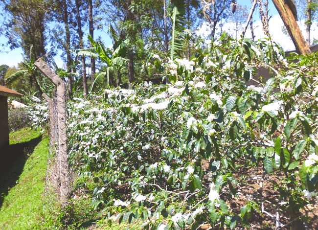
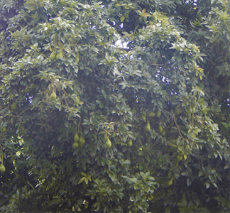

Access to Finance
Small holder farmers groups over the years have not been able to get financial support from financial institutions due to lack of collaterals and poor production. We exist to turn around this challenge. We ensure these farmers groups are able to access financial support to purchase farm inputs, as well as pre-harvest finance.
Africa Bridges,an affiliate of FTOK provides financing to cooperatives.

Access to Markets
We help farmers establish direct markets, where they can sell their commodities at premium rates and deal directly with the buyer. This helps farmers gain more by eliminating exploitation from brokers.We have partnered with
beanstitute who help famers access the markets

Agronomy
Small holder farmers have been relying on farming methods acquired from the family line. While these have results, they are not cost effective and they are not sustainable. We visit farmers in their own farms and offer practical based training on new skills that improve production and reduce cost.

Diversification
Reliance on one source of income has always seen farmers struggle at critical moments when they need money. We train farmers on new farming areas they can venture into to generate extra income to cushion them during tough times.

Environmental Responsiveness
Unpredictable weather patterns are a major threat to farmers. Without mitigation measures in place, farmers face low production and food insecurity. This ultimately affects the entire country as a whole. We train farmers on ways that can help them mitigate the effect of climate change.